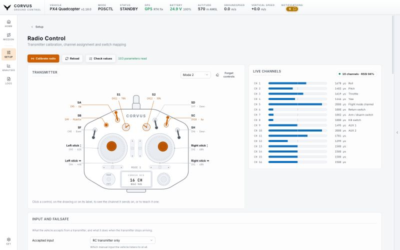
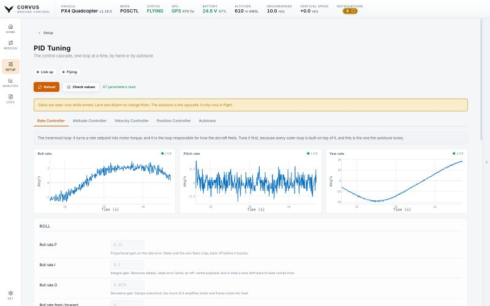

Set up
Radio control and tuning
The transmitter in your hands, drawn on screen and moving with your sticks and switches, and the controller gains that turn stick input into flight, tuned by hand with live plots or by the autopilot's own autotune.


The transmitter, drawn
At the top of the Radio Control page is a labelled drawing of a twin stick handset: two sticks, six switches and two knobs, each named in the margin. It moves with your own radio. Push a stick and the drawn stick travels across its well; flip a switch and its handle swings to the position it is in and lights up; turn a knob and its pointer follows.
So "is the radio even talking, and is that switch the one I think it is" is answered by looking, with no propellers on and nothing armed, rather than by a test flight.
Choose your stick mode (1 to 4) so the drawn sticks are where yours are.
Giving a channel a job
Click any control, on the drawing or on its label, to:
- see the channel it sends on,
- learn it: move the control and Corvus finds the channel,
- give that channel a job: arm, kill, return, hold, or an AUX passthrough.
Underneath sit the live channel bars and the full configuration:
- which input the vehicle accepts, and what it does when the transmitter goes quiet,
- the stick channels,
- the flight mode switch with its six positions,
- every other switch the autopilot can bind,
- and the auxiliary channels.
Next to every channel picker is Detect: press it, move the switch, and Corvus binds the channel that moved.
A channel bound to two jobs at once is flagged. Both stacks allow it, and a kill switch sharing the mode switch's channel fires on a mode change.
Radio calibration
Neither PX4 nor ArduPilot has an RC calibration of its own, so a ground station has to watch the channels while you move every control and then write the end points it saw. On this page the wizard is the calibration:
- Centre the sticks.
- Move everything through its full travel.
- Move one named stick at a time. The channel that answers is the one that gets bound, and the direction it moved decides whether the channel has to be reversed.
Nothing is written until you have seen the whole measurement. A channel that never really moved is refused by name instead of being written as a stick that behaves like a switch.
The drawn handset helps throughout. Each step draws an arrow inside the stick it wants and points it the way to push. During the sweep, every control whose channel has already travelled far enough is marked off, so what is left to move is something you can see rather than count. The six mode positions light up live, so you can check their order before you take off rather than in the air.
PID tuning


The PID Tuning page is split the way the controller is: rate, attitude, velocity and position, one tab per loop, innermost first. Only the loops the connected firmware reports are shown, so a multicopter and a fixed wing each get their own.
- Every gain is editable by hand and written back one at a time, confirmed by the aircraft. Gains are read only while armed.
- Each tab plots what the controller asked for beside what the airframe did. A response trace on its own cannot tell a gain that is too low from one that is too high; the difference between the two lines can.
Autotune only covers the rate and attitude loops, so a page that offered nothing else could not tune a whole vehicle. That is why the manual gains are the core of this page.
On ArduPilot the attitude and rate targets are streamed in any mode, but the position and velocity targets only in GUIDED, so those two charts stay empty in a manual hover. The gains themselves edit normally.
Autotune
Both stacks tune the rate and attitude controllers in flight: the autopilot injects small steps and measures the response, so the vehicle has to be armed and hovering. The page says that up front, lists the preconditions before you take off, and refuses to start on the ground.
- On PX4
- Autotune is a command. The page follows its progress, with a stop button that works throughout.
- On ArduPilot
- Autotune is a flight mode. Starting it switches the vehicle into AUTOTUNE, stopping it returns to the mode you were in, and the autopilot narrates the run in the console.
Choosing the axes
The axes to tune sit right above the start button. On ArduPilot and on a PX4 fixed wing you tick roll, pitch and yaw separately, so one flight can tune one axis. A PX4 multicopter tunes all three in one run (PX4 1.16 to 1.18 have no axis selection for it), so its row shows the three greyed out with that reason. Start stays disabled while no axis is selected.